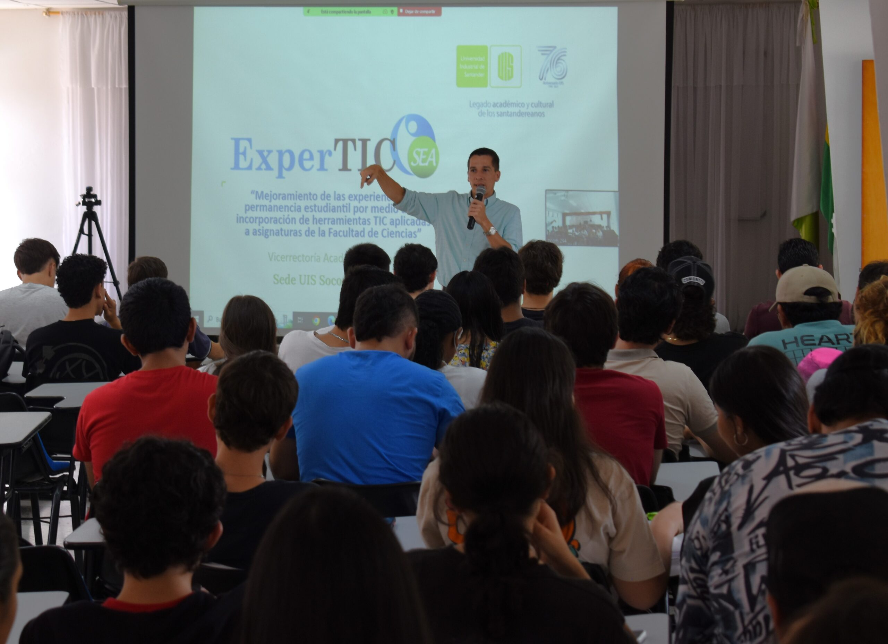
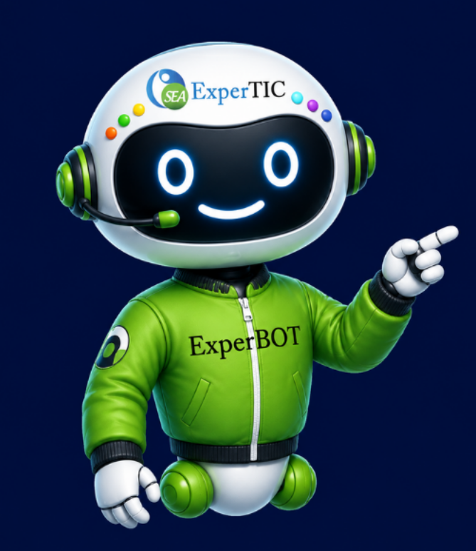

Bienvenido a
Aulas de
Entrenamiento
Una estrategia de ExperTIC para el fortalecimiento de tus habilidades en diferentes áreas.

Acceso a las plataformas
Seleccione la plataforma a la que desea ingresar para continuar su proceso de aprendizaje.
Pasos para matricular un nuevo curso en Connect
Consulte las aulas de entrenamiento disponibles, ingrese a su asignatura y realice la prueba de 14 días. Lea primero toda la información y luego siga las indicaciones.
🔍Busque su escuela, luego la asignatura que desea y finalmente haga clic en el botón del enlace al curso. Así podrá ingresar al espacio correspondiente.
🔑Tras los 14 días de prueba, complete el formulario de pines para continuar usando la plataforma durante el semestre (uno por cada curso).
Formulario📋Revise los temarios y agendas para conocer cuándo se activan los talleres y los contenidos. Consulte esta información antes de comenzar las actividades de cada curso.
📅Busque su escuela, luego la asignatura que desea y finalmente haga clic en el botón del enlace al curso. Así podrá acceder directamente a la asignatura seleccionada.
🎯Cada lección cuenta con tres niveles y dos rutas de aprendizaje: progresiva o comenzando por el nivel avanzado. Seleccione la ruta que prefiera.
Instructivo Connect
Lea el instructivo para conocer los talleres y el registro. Regístrese solo después y con su correo institucional.
Ver instructivoAcceso a los cursos
Una vez inscrito en los cursos, puede ingresar a través del siguiente botón, recuerde que debe ingresar su usuario (correo electrónico institucional) y contraseña.
Ingresar a los cursosEscuelas disponibles
Acceso a los cursos
Una vez inscrito en los cursos, puede ingresar a través del siguiente botón, recuerde que debe ingresar su usuario (correo electrónico institucional) y contraseña.
Ingresar a los cursosEscuelas disponibles
ALEKS es una plataforma educativa en línea que funciona como un tutor interactivo adaptable a diversas áreas de conocimiento. Su función principal es evaluar con precisión la base de conocimientos inicial de cada usuario para diseñar una ruta de aprendizaje personalizada e individualizada, lo que permite a cada alumno estudiar a su propio ritmo y alcanzar niveles de dominio superiores al 90%.
Instructivo Aleks
Lea el instructivo para conocer los talleres y el registro. Regístrese solo después y con su correo institucional.
Ver instructivoAcceso a los cursos
Una vez inscrito en los cursos, puede ingresar a través del siguiente botón, recuerde que debe ingresar su usuario (correo electrónico institucional) y contraseña.
Ingresar a los cursosEscuelas disponibles
Acceso a los cursos
Una vez inscrito en los cursos, puede ingresar a través del siguiente botón, recuerde que debe ingresar su usuario (correo electrónico institucional) y contraseña.
Ingresar a los cursosEscuelas disponibles
Acceso a los cursos
Una vez inscrito en los cursos, puede ingresar a través del siguiente botón, recuerde que debe ingresar su usuario (correo electrónico institucional) y contraseña.
Ingresar a los cursosEscuelas disponibles
Acceso a los cursos
Una vez inscrito en los cursos, puede ingresar a través del siguiente botón, recuerde que debe ingresar su usuario (correo electrónico institucional) y contraseña.
Ingresar a los cursosEscuelas disponibles
Centro de Atención a Estudiantes
Necesitas licencia
Ingresa al formulario, llenalo y espera nuestra respuesta con la licencia que solicitaste.
Ir al formulario de Connect Ir al formulario de Aleks Ir al formulario de Pearson|MyLabsSoporte para las plataformas.
En el siguiente botón podrás encontrar información sobre cómo obtener soporte para las plataformas virtuales de aprendizaje.
Atención y SugerenciasCentro de Atención a estudiantes.
Para comunicarte, envia un correo a experticplataformasuis@gmail.com
Para poder atender tu solicitud, por favor incluye la siguiente información:
- Tu nombre completo.
- Tu código de estudiante.
- Una descrión detallada de la consulta o solicitud.
Tiempo de respuesta.
Nuestro equipo responde puede tardar hasta 3 días hábiles.
Preguntas frecuentes
Resolvemos las dudas más comunes sobre las Aulas de Entrenamiento.
¿Qué es ExperTIC, qué son las Aulas de Entrenamiento y qué tipo de recursos ofrecen?
¿En qué plataformas están alojadas las materias y cuál me corresponde según mi asignatura?
¿Cómo me registro en las aulas y qué correo electrónico debo utilizar?
¿Qué hago si olvidé mi contraseña, necesito cambiar mi correo o no encuentro mis materias inscritas?
¿Es posible ingresar y realizar las actividades desde un celular o tablet?
¿Qué es el PIN de acceso, dónde lo encuentro y necesito un PIN distinto para cada materia?
¿Qué ocurre cuando vencen los 14 días de prueba y qué pasa con mi progreso registrado?
¿Cómo solicito un PIN para otra asignatura y puedo compartir mi PIN con un compañero?
¿Cómo me uno al curso de mi profesor y cómo se estructuran las lecciones por niveles?
¿Hay fechas límite para entregar actividades y es posible repetir una evaluación?
¿Puedo iniciar una lección directamente en el nivel avanzado o debo avanzar secuencialmente?
¿Qué debo hacer si la plataforma me solicita licencia o si presento fallas en Connect?
¿Cómo puedo contactar al Centro de Atención a Estudiantes y cuánto tardan en responder?
¿En dónde puedo calificar mi experiencia o enviar sugerencias sobre el uso de las plataformas?
¿Tuviste algún inconveniente o quieres compartir tu opinión sobre las plataformas?
Sobre nosotros
¿Qué es ExperTIC?
Es una estrategia académica que integra herramientas digitales para fortalecer el aprendizaje de los estudiantes de la Universidad Industrial de Santander.


¿Aulas de entrenamiento?
Espacios virtuales donde puedes practicar temas vistos en clase y realizar actividades progresivas de forma autónoma.
📚 Contenido
Lecciones por temas, actividades prácticas, evaluaciones y recursos multimedia organizados por semanas.
🧭 Navegación
Selecciona un módulo, revisa el contenido, realiza las actividades y completa las evaluaciones.
¿Plataforma Connect?
Es la plataforma donde se alojan las aulas de entrenamiento. Accede a todos los cursos y haz seguimiento de tu progreso desde cualquier dispositivo.
Acceso a cursos organizados por escuela
Seguimiento del progreso por módulo
Interacción con contenidos multimedia
Disponible desde cualquier dispositivo
Beneficios de las Aulas de Entrenamiento
Un espacio diseñado para acompañarte en tu proceso de aprendizaje y ayudarte a alcanzar mejores resultados académicos.
Mejora tu rendimiento académico
Refuerza los temas de clase con práctica guiada y actividades progresivas.
Aprende a tu ritmo
Accede cuando quieras y avanza según tu disponibilidad, sin presión de horarios.
Refuerza conocimientos
Tres niveles por lección (básico, medio, avanzado) para repasar desde donde necesites.
Acceso desde cualquier lugar
Disponible desde computador, tablet o celular con conexión a internet.
Recomendaciones para tu aprendizaje
Ten en cuenta estas sugerencias para aprovechar al máximo las Aulas de Entrenamiento y fortalecer tu proceso académico.
Revisa las aulas constantemente
Los contenidos se activan por semanas. Consulta el temario para no perderte ningún taller.
Completa todas las actividades
Cada actividad afianza un concepto. Saltarlas puede afectar tu comprensión del módulo siguiente.
Asegura buena conexión a internet
Se recomienda conexión estable para videos y actividades interactivas.
Aprovecha todos los recursos
Encontrarás videos, lecturas y ejercicios complementarios para profundizar.